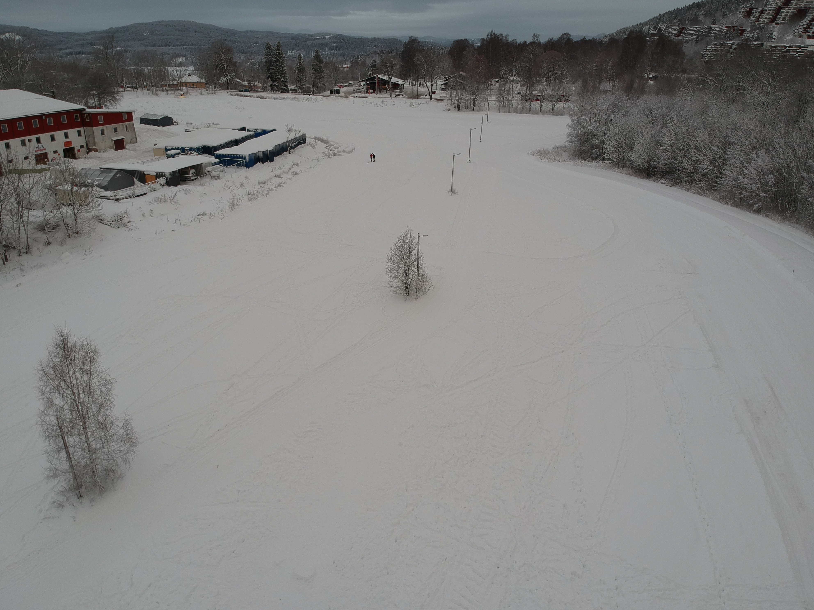
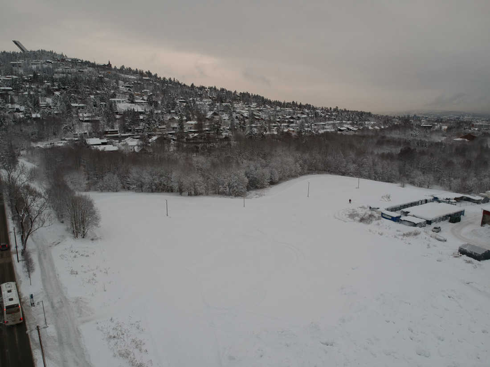
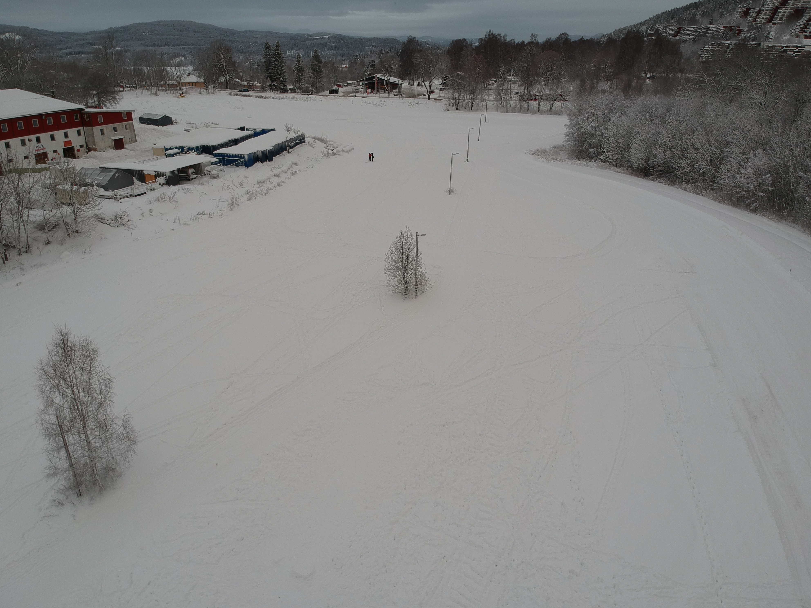
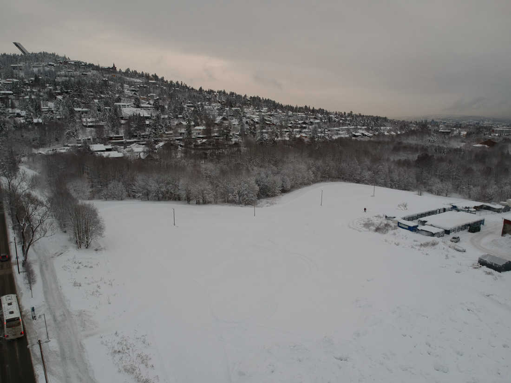

Velkommen til MartinCrossen
Onsdag 21. mars 2018
MartinCrossen Røa IL inviterer til skicross i nye Røa Snøpark på Voksenjordet. Løypa blir utarbeidet i samarbeid med ekspertisen på langrennscross i Norges Skiforbund og erfarne løypekjørere fra Skiforeningen og Bymiljøetaten.
Martin Johnsrud Sundby bidrar til arrangementet og vil være til stede med flere av sine kollegaer
Røa Langrenn oppfordrer alle deltakere til å bruke fluorfrie glidprodukter.
Tid og sted
MartinCrossen vil bli arrangert onsdag 21. mars 2018 i nye Røa Snøpark.
Hjertelig velkommen til MartinCrossen!
  
 